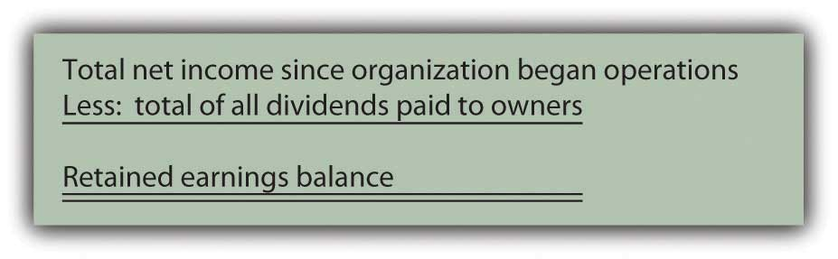
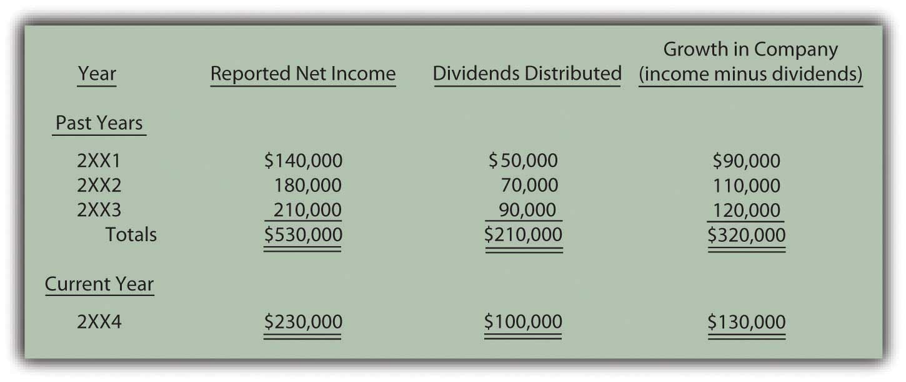
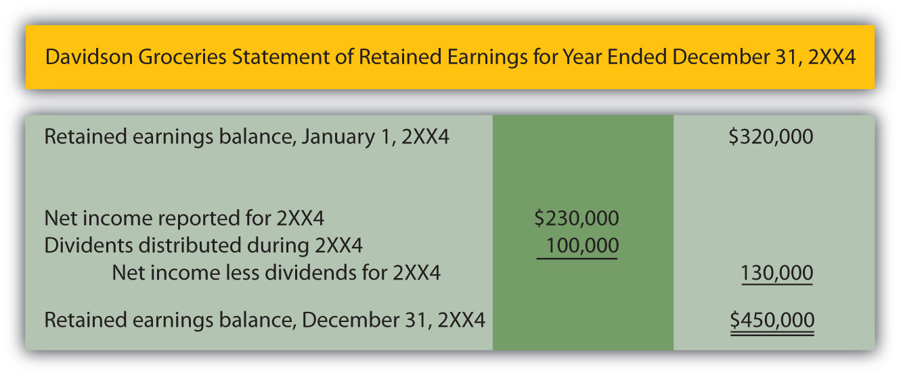

At the end of this section, students should be able to meet the following objectives:
Question: The second financial statement is known as the statement of retained earnings.As indicated earlier, many companies actually report a broader statement of changes in stockholders’ equity to present details on all the accounts appearing in the stockholders’ equity section of the balance sheet. At this initial point in the coverage, focusing solely on retained earnings makes the learning process easier.The term retained earnings has not yet been introduced. What information does a retained earnings balance communicate to an outside decision maker? For example, on January 31, 2009, Barnes & Noble reported retained earnings of nearly $721 million, one of the larger amounts found in the company’s financial statements. What does that figure tell decision makers about this bookstore chain?
Answer: Retained earnings is one of the most misunderstood accounts in all of financial reporting. In simplest terms, this balance is merely the total amount of net income reported by a company since it first began operations, less all dividends paid to stockholders during that same period. Thus, the figure provides a measure of the profits left in a business throughout its history to create growth.
Figure 3.2
When a company earns income, it becomes larger because net assets have increased. Even if a portion of the profits is later distributed to shareholders as a dividend, the company has grown in size as a result of its own operations. The retained earnings figure informs decision makers of the amount of that internally generated expansion. The reported balance answers the question: How much of the company’s net assets have been derived from operations during its life?
If a company reports net income of $10,000 each year and then pays a $2,000 dividend to its owners, it is growing in size at the rate of $8,000 per year. After four years, for example, $32,000 ($8,000 × four years) of its net assets were generated by its own operating activities. That information is communicated through the retained earnings balance.
As of January 31, 2009, Barnes & Noble reported total assets of $3.0 billion and liabilities of $2.1 billion. Thus, the company had net assets of $900 million. It held that many more assets than liabilities. Those additional assets did not appear by magic. They had to come from some source. One of the primary ways to increase the net assets of a company is through profitable operations. The balance for retained earnings shown by Barnes & Noble at this time lets decision makers know that approximately $721 million of its net assets were generated by the net income earned since the company’s inception, after all dividend distributions to shareholders were subtracted.
Link to multiple-choice question for practice purposes: http://www.quia.com/quiz/2092623.html
Question: In Figure 3.1 "Income Statement", Davidson Groceries calculated its net income for 2XX4 as $230,000. Assume that this company began operations on January 1, 2XX1, and reported the following balances over the years:
Figure 3.3
How is this information reported? What is the structure of the statement of retained earnings as it appears within a company’s financial statements?
Answer: In its three prior years of existence, Davidson Groceries’ net assets increased by a total of $320,000 as a result of its operating activities. As can be seen here, the company generated total profit during this period of $530,000 while distributing dividends to shareholders amounting to $210,000, an increase of $320,000. Net assets rose further during the current year (2XX4) as Davidson Groceries made an additional profit (see also Figure 3.1 "Income Statement") of $230,000 but distributed $100,000 in dividends.
Figure 3.4 "Statement of Retained Earnings" shows the format by which this information is conveyed to the decision makers who are evaluating Davidson Groceries.
Figure 3.4 Statement of Retained Earnings
Link to multiple-choice question for practice purposes: http://www.quia.com/quiz/2092624.html
Question: In the information given about Barnes & Noble, the company reported holding net assets of $900 million but only about $721 million of that amount was generated through operations as shown by its retained earnings balance. Clearly, additional sources must have helped the company attain its growth in size. Increases in net assets of a company are not the result of magic or miracles. Other than through operations, how else does a company derive its net assets?
Answer: Beyond operations (as reflected by the retained earnings balance), a company accumulates net assets by receiving contributions from its owners in exchange for capital stock.As with many aspects of the coverage at this introductory stage, other events can also impact the reported total of a company’s net assets and will be discussed in later chapters. The two sources here—capital stock and retained earnings—are shown by all corporations and are normally significantly large amounts. This is the other major method by which Barnes & Noble was able to gather its $900 million in net assets. On a balance sheet, the measure of this inflow is usually labeled something like capital stockOwnership (equity) shares of stock in a corporation that are issued to raise financing for capital expenditures and operations., common stockA type of capital stock that is issued by every corporation; it provides rights to the owner that are specified by the laws of the state in which the organization is incorporated., or contributed capitalAmounts invested in a corporation by individuals or groups in order to attain ownership interests; balance is reported within stockholders’ equity section of balance sheet to indicate the amount of the net assets that came from the owners.. The reported amount indicates the portion of the net assets that came into the business directly from stockholders.
The amount of a company’s net assets is the excess of its assets over its liabilities. Two reported balances indicate the primary source of those net assets:
Companies that seek to grow must be able to generate resources from owners, operations, or both.
Question: A corporation issues (sells) ownership shares to investors. The source of the resulting inflow of assets into the business is reflected on its balance sheet by the reporting of a capital stock (or contributed capital) balance. Thus, over its life, Motorola has received assets of $7.8 billion from stockholders in exchange for capital stock. Does the company receive money in this way when shares are sold each day on the New York Stock Exchange, NASDAQ (National Association of Securities Dealers Automated Quotation Service), or other stock exchanges?
Answer: No, purchases and sales on stock markets normally occur between investors and not with the company. Only the initial issuance of the ownership shares to a stockholder creates the inflow of assets reported by the company’s capital stock or contributed capital account.
To illustrate, assume that Investor A buys capital stock shares directly from Business B for $179,000 in cash. This transaction increases the net assets of Business B by that amount. The source of the increase is communicated to decision makers by adding $179,000 to the capital stock balance reported by the company. Subsequently, these shares may be exchanged between investors numerous times without any additional financial impact on Business B. For example, assume Investor A later sells the shares to Investor Z for $200,000 using a stock market such as the New York Stock Exchange. Investor A earns a $21,000 gain ($200,000 received less $179,000 cost) and Investor Z has replaced Investor A as an owner of Business B. However, the financial condition of the company has not been affected by this new exchange. Thus, the capital stock balance only measures the initial investment contributed directly to the business.
The source of a company’s net assets (assets minus liabilities) is of interest to outside decision makers. The reported retained earnings figure indicates the amount of these net assets that came from the operations of the company. This growth in size was internally generated. Retained earnings is all the net income earned since operations began less all dividend distributions. Net assets can also be derived from contributions to the company made by parties seeking to become owners. The capital stock (or contributed capital) balance measures this source of net assets. To impact the company, the assets must come directly from the owners. Hence, exchanges between investors on a stock exchange do not affect the company’s net assets or its financial reporting.